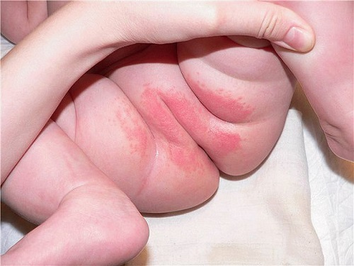
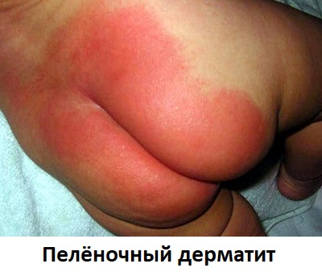

ОПРЕЛОСТИ

Опрелости — это то, с чем каждому родителю и младенцу рано или поздно приходится иметь дело, особенно в первый год жизни. Зачастую эта проблема очень беспокоит родителей, которые переживают, что делают недостаточно, чтобы содержать в чистоте кожу промежности ребенка. Дело же совсем в другом. Опрелости бывают у всех младенцев в определенные моменты в начале их жизни. Опрелости могут быть очень разного размера и степени тяжести. Следующий раздел содержит некоторые подсказки, как уменьшить эту проблему.
ПРИЧИНЫ
У младенцев чрезвычайно чувствительная кожа промежности. Сочетание влажности, воздействия мочи и экскрементов в течение всего дня, как и постоянное натирание подгузниками, создает благоприятные условия для образования опрелостей. Кожа ребенка легко становится раздраженной, красной, потрескавшейся и даже может начать кровоточить в месте раздражения. Бактерии и/или дрожжевые грибки используют эту ситуацию, усиливая опрелости и усугубляя положение.
ПРОФИЛАКТИКА
У некоторых младенцев вообще нет особых проблем с опрелостями. Однако у большинства время от времени бывают обострения. Вот как можно предотвратить развитие опрелостей:
- Частая смена подгузников. Каловые массы очень раздражают младенческую кожу. Новорожденным нужно менять подгузники каждые два-три часа. Спустя первые несколько недель вы можете подождать и подольше. Однако всегда меняйте подгузник, если он стал слишком мокрым или после дефекации.
- Хорошенько очищайте промежность. Это помогает предохранить кожу ребенка от образования опрелостей.
- Используйте детские салфетки без ароматизаторов. Отдушки, которыми ароматизируют детские салфетки, могут вызвать раздражение кожи.
- Используйте крем против опрелостей. Некоторым младенцам он не нужен. Но большинство в определенные моменты, а некоторые и постоянно нуждаются в нем, чтобы предотвратить опрелости. Существует множество различных марок, содержащих окись цинка, которая очень эффективна для профилактики и лечения опрелостей. Есть и прозрачные мази на основе вазелина. Все они продаются без рецепта.
ЧТО ДЕЛАТЬ
Даже самый прилежный родитель не в состоянии предотвратить случайные опрелости. Вот несколько способов держать ситуацию под контролем:
- Мойте попку малыша водой. Вытирание пораженного опрелостями участка детскими салфетками может вызвать еще большее раздражение и ухудшить состояние кожи.
СОВЕТ ДОКТОРОВ СИРС: ПРОВЕТРИВАЙТЕ ТЕЛО РЕБЕНКА
Пусть ребенок как можно дольше находится без пеленок — хотя бы полчаса в день, если не больше. Хорошо делать это, уложив ребенка попкой на полотенце, не смазывая предварительно кожу кремом. Воздух прекрасно успокаивает раздраженную кожу промежности.
|
Вместо этого воспользуйтесь клизмой с водой, чтобы осторожно смыть каловые массы и мочу с кожи промежности малыша. Если осталось немного мочи или каловых масс, нежно промокните их детской салфеткой.
- При опрелостях используйте большее количество детского крема. Крем для пеленания с оксидом цинка хорошо действует при опрелостях. Используйте крем при каждой смене подгузника.
РАЗЛИЧНЫЕ ТИПЫ ОПРЕЛОСТЕЙ
Есть несколько виновников, из-за которых развиваются опрелости. Вот они:
- Контактный пеленочный дерматит. Эго обычные опрелости, которые обсуждались выше. «Контактным» он называется из-за контакта раздражителей с кожей ребенка.
- Грибковое поражение кожи (молочница).
- Себорейный дерматит. Это кожное заболевание, которое может поражать кожу лица, шеи, волосистой части головы и даже промежности. Проявляется в виде чешуйчатой, красной, шелушащейся сыпи, которая может быть довольно зудящей и раздражающей. Ваш врач может определить опрелость как себорейный дерматит. Лечение обычно включает нанесение крема со стероидом (такого, как безрецептурный гидрокортизон) 2—3 раза в день. НЕ используйте крем со стероидом дольше недели без консультации врача.
- Импетиго. Это бактериальная инфекция кожи, которая может развиться на любом участке тела, включая промежность. Импетиго проявляется как красная сыпь с пузырями, покрытыми корками медового цвета. Лечение включает применение мазей с антибиотиками так, как назначит ваш врач.
- Бактериальные прыщи. В отличие от импетиго, при котором из-под корок сочится отделяемое, у некоторых детей (особенно младшего возраста) образуются многочисленные мелкие прыщики с белыми головками. Их вызывают бактерии каловых масс. Лечение состоит в более частом обмывании попки теплой мыльной водой и применении мази с антибиотиком.
- Интертриго. Этот вид опрелостей развивается в складках кожи на любом участке тела. Особенно восприимчива кожа В области паховых складок. Появление интертриго связано с трением кожи о кожу, в результате образуется красная сыпь, похожая на ожог. Эффективно применение прозрачных мазей для пеленания на основе вазелина.
- Аллергическая сыпь. Сыпь также может быть признаком того, что у вашего ребенка аллергия на некоторые виды продуктов. Аллергическая сыпь обычно выглядит как красноватое кольцо вокруг анального отверстия ребенка. Она может появиться из-за каких-либо веществ, съеденных матерью и полученных младенцем через грудное молоко. Наиболее часто виновниками бывают кислые продукты (такие как цитрусовые и блюда с помидорами). Существует и множество других возможных причин аллергии, которая может привести к развитию опрелостей. Заметив, что у ребенка начинается вспышка высыпаний после употребления определенных продуктов, кормящая мать должна исключить их из своего рациона.
- Сыпь от трения. Малыши постарше намного больше натирают подгузниками кожу, когда бегают, карабкаются и наклоняются. Типичными являются участки сухой красной кожи на ягодицах и ногах от пояса и резинок подгузников. Прозрачная мазь (или приучение к горшку!) поможет уменьшить это раздражение.

Обратитесь к своему врачу, если у вашего ребенка сыпь, которая не исчезает через неделю после начала лечения или становится более распространенной. Плановый осмотр — тоже хороший момент, чтобы обсудить проблему опрелостей с вашим врачом. Если у вашего ребенка есть высыпания на момент посещения врача, покажите их ему. У педиатров богатый опыт в диагностике разных видов опрелостей. Хорошая новость — по мере того, как дети становятся старше, особенно после первого года, опрелости становятся намного меньшей проблемой.
Здоровье ребенка от докторов Сирс / Сирс У. и др.